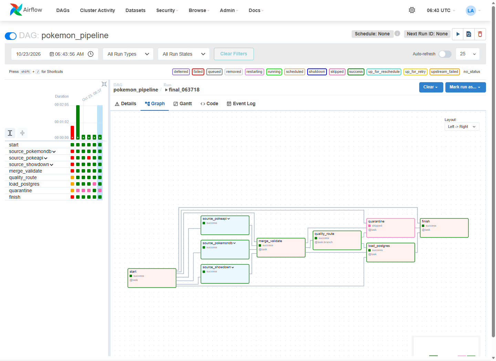
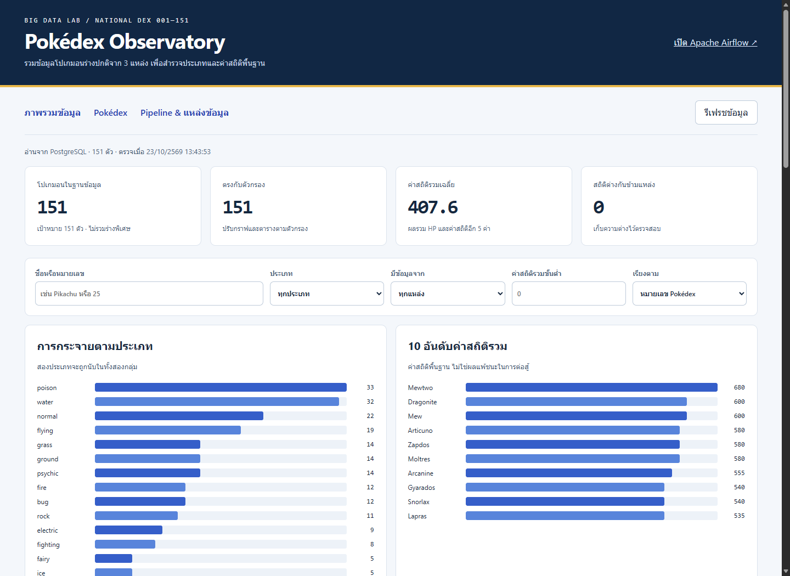
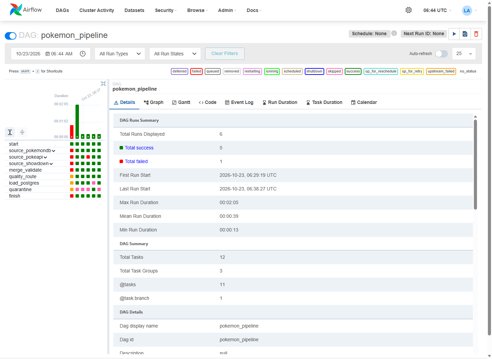

02739452 · Big Data · ลำดับที่ 19 · รหัสนิสิต 6621601093 · 23 ตุลาคม 2026
Pokédex Observatory
หมวด: ข้อมูล Pokémon ขอบเขต: National Pokédex หมายเลข 1–151 เฉพาะร่างปกติ
รวบรวมชื่อ ประเภท และค่าสถิติพื้นฐานปัจจุบันจาก 3 แหล่ง เพื่อเปรียบเทียบประเภทและอันดับค่าสถิติ
Public GitHub repository:
https://github.com/PasitPukang/02739452-19-6621601093
ตรวจ robots.txt ทุก origin และเคารพ Crawl-delay ก่อนร้องขอ เก็บเฉพาะข้อมูลตัวละครเกม ไม่มีข้อมูลบุคคล ไม่ใช่ค่าสถิติจากเกม Gen 1 ดั้งเดิม และไม่รวม Mega/Regional forms
1. ภาพรวมและระดับที่ทำได้
ทำฟังก์ชันครบระดับ 1–3 และโบนัสหน้าสถานะ Pipeline
Airflow รัน 3 TaskGroups ขนาน แต่ละกลุ่ม extract → transform จากนั้น merge schema เดียว ตรวจคุณภาพ แล้ว branch ไปโหลด PostgreSQL ด้วย UPSERT หรือ quarantine เมื่อไม่ผ่าน เว็บที่พัฒนาเองอ่าน PostgreSQL โดยตรงผ่าน Python/SQLAlchemy

ภาพ 1 — Graph view จริง: final_063718 สำเร็จ; load_postgres สีเขียว และ quarantine ถูก skip สีชมพู มี 3 TaskGroups / 12 tasks
เว็บ Dashboard และหลักฐานการรัน
เว็บมี KPI 4 ค่า ตารางแบ่งหน้า ค้นชื่อ/หมายเลข กรองประเภท แหล่งข้อมูล และค่ารวมขั้นต่ำ พร้อมกราฟจำนวนตามประเภทและ 10 อันดับค่าสถิติสูงสุด หน้า Pipeline แสดงสถานะทั้งสามแหล่ง ประวัติรัน และเหตุผลที่ปฏิเสธข้อมูล

ภาพ 2 — เว็บอ่านข้อมูล PostgreSQL จริง: 151 ตัว, ค่าสถิติรวมเฉลี่ย 407.6, conflict 0 ตัว; ตารางและหน้า Pipeline ดูภาพเพิ่มเติมได้ใน audit/screenshots/

ภาพ 3 — Grid view จริง: คอลัมน์ซ้ายสุดเป็นรอบพัฒนาที่ล้มเหลวก่อนแก้ reserved run_id; รอบทดสอบแหล่งล่มมี source_pokeapi สีแดงแต่ finish เขียว; รอบข้อมูลเสีย load สีชมพูและ quarantine เขียว
| รอบทดสอบจริง (23 ต.ค.) | ผลลัพธ์ข้อมูล / ตารางหลัก |
|---|
| rerun_063718 — รันซ้ำ | SUCCESS · 453 → 151 · ตารางยังคง 151 แถว |
| partial_063718 — จำลอง PokéAPI ล่ม | PARTIAL · 302 → 151 จากอีก 2 แหล่ง · ตาราง 151 |
| quality_063718 — จำลอง total ผิด | REJECTED · load ถูก skip · hash ข้อมูลหลักไม่เปลี่ยน |
| final_063718 — คืนสู่ค่าปกติ | SUCCESS · 453 → 151 · ทั้ง 3 แหล่งผ่าน แหล่งละ 151 |
เวลารอบทดสอบ 13:37–13:38 น. เวลาไทย; source extraction รอบสุดท้ายเริ่มพร้อมกันประมาณ 13:38:29.35 น. ข้อมูลซ้ำข้ามแหล่งลดลง 302 รายการด้วย dex_id ตรวจหลักฐาน task states, เวลา และ SHA-256 ใน audit/pokemon_validation.json สถานการณ์ล่ม/ข้อมูลเสียเป็นการจำลองที่ระบุในพารามิเตอร์ ไม่ใช่ outage จริง
2. ปัญหาที่พบ การหาสาเหตุ และวิธีแก้
| ปัญหา / อาการ | การหาสาเหตุ | วิธีแก้และการตรวจผล |
|---|
1. Airflow task รันไม่ผ่าน
รอบแรก baseline_full ล้มเหลว | อ่าน task log พบชื่ออาร์กิวเมนต์ run_id ชนกับ context ที่ Airflow สงวนไว้ แม้ไฟล์ DAG import ได้ | เปลี่ยนชื่ออาร์กิวเมนต์ที่ส่งต่อเป็น batch_id; ดึง run_id จริงจาก context ที่ start เท่านั้น เพิ่ม regression check และรัน DAG จริงใหม่จน finish สำเร็จ |
2. หมายเลขซ้ำจากรูปแบบข้อมูลต่างกัน
3 แหล่งรวมกัน 453 รายการ และหน้าเว็บมีหลาย forms ต่อหมายเลข | เปรียบเทียบหมายเลขและ rows ของ HTML/JSON พบ Mega/Regional forms ใช้ dex_id เดียวกัน และชื่อ/ชื่อ stat ไม่เหมือนกันข้ามแหล่ง | ตัด forms ก่อน normalize, map stats เป็น 6 ฟิลด์เดียวกัน รวมด้วย dex_id; เลือก stats ตาม PokéAPI → Database → Showdown และเก็บ provenance/conflicts ได้ 151 ตัวตรงกัน ใช้ UPSERT ไม่เพิ่มแถวเมื่อรันซ้ำ |
การป้องกันข้อมูลเสียและแหล่งล่ม
retry 1 ครั้งแล้วบันทึกสถานะแหล่งนั้น; transform และ merge ใช้ all_done เพื่อประมวลผลแหล่งที่เหลือ กฎตรวจคือ ID 1–151, ชื่อไม่ว่าง, ประเภทถูกต้อง 1–2 ประเภท, stats เป็นจำนวนเต็ม 1–255, total ตรงผลรวม, ไม่มี ID ซ้ำภายในแหล่ง และผลรวมอย่างน้อย 100 ตัว หากไม่ผ่านจะ quarantine แทนการเขียนทับข้อมูลหลัก
REJECTED คือสถานะข้อมูล; DAG อาจสำเร็จเพราะจัดการ quarantine เรียบร้อย ส่วนการโหลดล้มเหลวจริงจะทำให้ final task fail ไม่ปิดบังเป็นสำเร็จ
3. การวางแผนและจัดลำดับงาน
จัดงานให้ได้เส้นทางขั้นต่ำก่อน แล้วเพิ่มความทนทานตามเกณฑ์ โดยกำหนดสัดส่วนเวลาที่ตั้งใจใช้ดังนี้:
| สัดส่วนเวลา | งานและจุดตรวจ |
|---|
| 10% | ยืนยันหัวข้อ / 3 แหล่ง / robots และทดลองให้ได้อย่างน้อย 100 ตัว |
| 40% | ETL → PostgreSQL ให้ได้ระดับ 1 ก่อน; ต่อ TaskGroups, UPSERT, dedup และ quality branch |
| 25% | เว็บอ่านฐานจริง ตาราง กราฟ KPI ตัวกรอง และสถานะ Pipeline |
| 25% | ทดสอบรันซ้ำ/แหล่งล่ม/ข้อมูลเสีย เริ่มระบบจากโฟลเดอร์ใหม่ เก็บภาพ ทำ PDF และตรวจไฟล์ก่อนส่ง |
สิ่งที่ตัดออก: ไม่ทำระบบทำนาย/ต่อสู้ Pokémon, login ผู้ใช้, แอนิเมชัน และ Power BI เพราะไม่ช่วยเกณฑ์งานนี้ ใช้เว็บหน้าเดียวกับไลบรารีมาตรฐานเพื่อลด dependency ไม่ใช้ Selenium ตามข้อกำหนด และไม่ตั้ง schedule อัตโนมัติเพื่อลดการร้องขอบริการภายนอก
การตรวจรับและวิธีเปิดตรวจ
Unit tests 21 ผ่าน; integration DAG จริง 4 สถานการณ์ผ่าน; browser ตรวจค้นหา/ตัวกรอง/แบ่งหน้า/จอมือถือผ่าน; ทดสอบ build จาก source ใหม่โดยไม่มี dataset/cache แล้ว PostgreSQL, scheduler และเว็บเริ่มได้ DAG ไม่มี import errors หลักฐานอยู่ใน audit/
Clone repo → คัดลอก .env.example เป็น .env → กำหนดรหัสสองค่า → docker compose up -d --build → เปิด Airflow localhost:8089 → unpause/trigger pokemon_pipeline → เปิดเว็บ localhost:8091 ดูขั้นตอนเต็มใน README.md
ข้อจำกัด: ต้องใช้อินเทอร์เน็ต; รอบแรกดึงรายละเอียด 151 ตัวจึงอาจใช้หลายนาที หากทุกแหล่งล่มหรือข้อมูลเหลือน้อยกว่า 100 ตัว ระบบปฏิเสธรอบใหม่และคงข้อมูลรอบที่ผ่านล่าสุด ไม่มีการรับประกันว่ารูปแบบเว็บภายนอกจะไม่เปลี่ยน